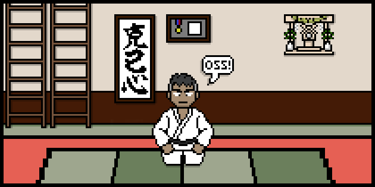
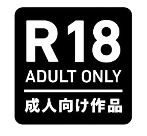
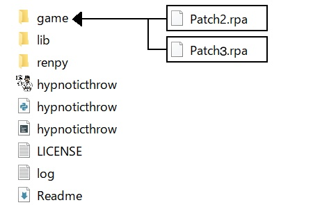
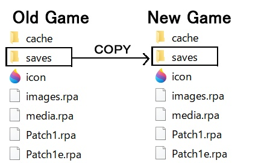
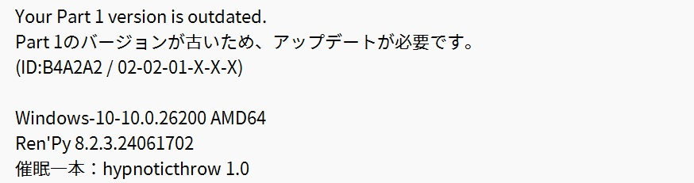
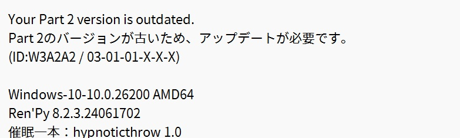
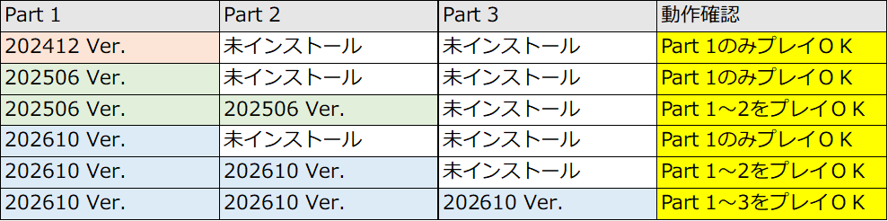
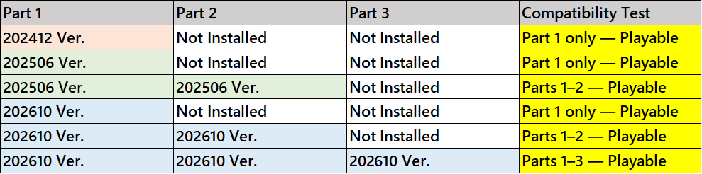
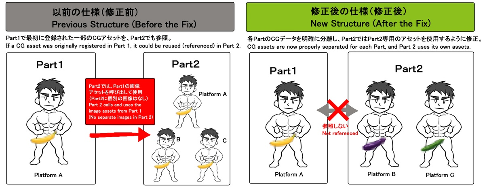

📢必ずお読みください

- ゲームをご購入いただき、誠にありがとうございます。販売プラットフォームやFANBOXでは、情報がやや不足している部分がございましたので、ゲームに関する情報を手軽にご確認いただけるマニュアルをご用意いたしました。（本マニュアルはスマートフォンなどのモバイル端末にも対応しています）
- Part3をプレイするには、Part1・Part2の最新版（2026年10月9日現在）が必要です。旧バージョンのPart1・Part2とは互換性がなく、ゲームは起動しません。必ずPart1・Part2・Part3をすべて最新版に揃えたうえで、以下の手順に従ってインストールしてください。現在、すべてのプラットフォームのPart 1・2は、2026年10月版への更新が完了しています（BOOTH・DLsite・itch.io）。
- 今後のパートをプレイする際、アップデートやホットフィックスなどにより、以前のパートの最新版を再ダウンロードする必要が生じる場合があります。再ダウンロードできるよう、購入履歴は安全に保管してください。
📢Please read
- Thank you very much for purchasing the game. Information on the sales platforms and FANBOX has been somewhat limited, so a manual has been prepared for easy access to details about the game. Please take a moment to read it. (This manual is also compatible with mobile devices.)
- To play Part 3, you need the latest versions of Part 1 and Part 2 (as of 9th October, 2026). Older versions are not compatible and the game will not launch. Please make sure Parts 1, 2, and 3 are all up to date and follow the installation guide below. Currently, Part 1 and Part 2 on all platforms have been updated to the 202610 version (BOOTH, DLsite, and itch.io).
- Future parts may require you to re-download the latest versions of previous parts due to updates or hotfixes. Please keep your purchase records safe so that you can re-download them.
⚠️注意事項

- 本作は18歳以上のゲイ向け作品です。未成年者のプレイおよび未成年者への配布・譲渡を禁じます。
- 本作には一部のプレイヤーにとって不快に感じられる可能性のあるテーマが含まれています。プレイ前に本注意事項を必ずお読みください。
- 本作には、男性同士の性的表現、催○、自慰、乳首責め、ぶっかけ、放尿、射精管理、公共の場での性的嫌がらせ・レ○プ、異性愛および同性愛セックス、近○相○、セックス玩具の使用、一部BDSM要素など、18歳未満の方や、ホモフォビア、過激な性描写に抵抗のある方には不適切な表現が多数含まれます。プレイは自己責任でお願いします。
- 武田隼人はノンケ（異性愛者）という設定です。物語の主軸は催○とそれによる変化の過程にあり、一般的なゲイ同士の関係（トップ／ボトムなど）の描写や、恋愛・ボーイズラブ（BL）の要素はありません。
- 物語の演出上、ホモフォビア（同性愛嫌悪的）なセリフや表現が一部含まれています。これらはキャラクターの心情や変化を描くためのフィクション上の演出であり、制作者の思想を反映するものではありません。
- 本作には18歳未満の人物に関する性的・エロティックな描写は一切含まれておらず、実在の人物・団体・地名・事件等とは一切関係のないフィクションです。
- 画面には暗転、揺れるテキスト、フラッシュ・グリッチ効果、スパイラル画像などの演出が含まれます。光過敏性発作のある方はご注意ください。
- 本ソフトウェアの無断複製・転載・配布・インターネット上へのアップロードを禁じます。
⚠️違法な改造・海賊版への対応
少し気の重い話題に触れることになり、申し訳ありません。
本ゲームを無断で翻訳・改変したものが、あるECプラットフォームで許可なく販売されていた事例がありました。この件については、すでに注意喚起を行っており、このような違法に再販売されたものや海賊版に関するお問い合わせやサポートには、一切対応しておりません。
BOOTH・DLsite・itch.io以外で販売・配布されているものは、すべて違法なコピーです。
ゲームに関するサポートは、正規の販売プラットフォームを通じて購入された公式版に限らせていただき、不当なお問い合わせや要求が続く場合には、該当ユーザーを運営へ通報したり、アクセス制限などの措置を取る場合があります。
皆様のご理解とご協力を心よりお願いいたします。
⚠️Advisory Caution
- This work is intended for gay audience aged 18 and over. Minors are prohibited from playing the game or distributing/transferring it to minors.
- This work contains themes that may be uncomfortable or disturbing to some players. Please be sure to read these advisory precautions before playing.
- This work contains numerous expressions that may be inappropriate for persons under 18, as well as for those who are uncomfortable with homophobia or explicit sexual content, including sexual content between men, hypnosis, masturbation, nipple stimulation, ejaculation on the body, urination, ejaculation control, sexual harassment and rape in public places, heterosexual and homosexual sex, incest, the use of sex toys, and some BDSM elements. Please play at your own discretion.
- Hayato Takeda is a straight (heterosexual) character. The main focus of the story is hypnosis and the process of change resulting from it; there are no depictions of typical relationships between gay men (such as top/bottom dynamics), nor are there any romance or Boys' Love (BL) elements.
- For narrative purposes, some homophobic lines and expressions are included in the work. These are fictional elements used to portray the characters' emotions and changes, and do not reflect the creator's personal beliefs.
- This work contains no sexual or erotic depictions involving persons under 18, and is entirely fictional and unrelated to any real persons, organizations, locations, incidents, or other real-world entities.
- The screen includes effects such as blackouts, shaking text, flashes, glitch effects, and spiral images. Persons with photosensitive epilepsy should exercise caution.
- Unauthorized reproduction, redistribution, distribution, or uploading of this software to the Internet is prohibited.
⚠️Notes Regarding Illegal and Pirated Versions
I apologize for bringing up a somewhat unpleasant topic.
There was a case where an unauthorized translation and modification of this game was sold without permission on a certain EC platform. A warning regarding this matter has already been issued, and I do not provide any support or respond to inquiries concerning such illegally resold or pirated versions.
Any copies sold or distributed outside of BOOTH, DLsite, and itch.io are unauthorized copies.
Game support is limited to official versions purchased through authorized sales platforms. If unreasonable inquiries or requests continue, measures such as reporting the user or restricting their access may be taken.
I sincerely appreciate your understanding and cooperation.
🛠️ゲームのインストール・アップデート方法
新規ユーザーのインストール・既存ユーザーのアップデート方法
新規プレイヤー・既存プレイヤーともに、以下の手順でインストールしてください。
⚠️Part3は旧バージョンのPart1・Part2とは互換性がなく、ゲームは起動しません。必ずPart1・Part2・Part3をすべて最新版(202610 update version)に揃えたうえで、以下の手順に従ってインストールしてください。
⚠️問題が発生した際にロールバックできるよう、インストール前に必ず旧バージョンのファイルを別途バックアップしてください。（プラットフォームでは、旧バージョンのファイルは再ダウンロードできません）
- 最新バージョンの Part1、Part2、Part3 をダウンロードしてください。
- まずPart1を解凍します。
- Part2とPart3をそれぞれ解凍し、中にあるすべての .rpa ファイルを、Part1フォルダ内のgameサブフォルダにコピー＆ペーストしてください。

- ゲームが正常に起動すれば、インストールは完了です。Part3の新しいタイトル画面とBGMが表示されます。
既存のセーブデータをPart3に引き継ぐ方法
旧バージョンのゲームフォルダ内にあるgameフォルダを開き、その中のsavesフォルダを、Part3まで入れたゲームフォルダ内のgameフォルダにコピー＆ペーストしてください。必要なセーブファイルのみを個別に移動することも可能です。

セーブデータ移行時のご注意
- 念のため、セーブデータの移行とPart3の正常な起動を確認するまでは、旧バージョンのゲームフォルダを削除せず保管しておくことをおすすめします。
- セーブデータの移動は、ゲームを完全に終了した状態で行ってください。ゲームの起動中に移動すると、データが上書きされたり、破損したりする恐れがあります。
- ファイルを個別に移動する場合は、.saveファイルだけでなく、persistentファイルも一緒に移動してください。（リプレイ記録などを保持したい場合）
- 例外的に、アップデート後、一部のセーブデータで読み込みエラーが発生する場合があります。その際は、実験中・スケジュール進行中・イベント進行中など、異なる場面で作成した別のセーブファイルをお試しください。
- 体験版・アーリーアクセス版・開発中のバージョンなど、正式リリース版ではないバージョンで作成されたセーブデータは、正常に動作しない可能性があります。
- Part3で進行したセーブデータを、Part1またはPart2までしかインストールされていない状態で読み込もうとした場合（バージョンダウン）、不具合が発生し、ゲームが停止したり、セーブデータが破損したりする恐れがあります。
バージョン間の互換性に関するご注意
- Part 1とPart 2は必ず最新バージョンをご使用ください。 Part 1またはPart 2が最新バージョンでない場合、Part 3との互換性がないため、ゲームを正常に起動することができません。また、新旧バージョンが混在している場合も同様に起動できません。
- 旧バージョンを使用した場合、または旧バージョンと新バージョンを組み合わせて起動した場合、以下のようなエラーメッセージが表示され、ゲームが停止します。ゲームフォルダ内に生成されるtraceback.txtファイルをご確認ください。サポートが必要な場合、開発者からこのファイルの提出をお願いすることがあります。
- 正常に起動するバージョンの組み合わせは下記のとおりです。
- 各プラットフォームのファイルは、PART3の発売日に合わせて2026年10月版に更新されています。
- 同一パートの異なるバージョンを、同一フォルダ内に置かないでください（例：Part2のAバージョンとBバージョンを一つのフォルダに配置する）。ファイル名を変更しても、ファイル内部のコードが重複するため、ゲーム起動時にクラッシュが発生します。
- 体験版・アーリーアクセス版・開発中のバージョンなど、正式リリース版ではないPart1・Part2はPart3との互換性がありません。



上記のようにバージョンが揃っていない組み合わせの場合、ゲームは起動しません。
Part3のインストールとセーブデータの移行が完了し、ゲームが正常に動作することを確認した後は、旧バージョンのゲームファイルを削除しても問題ありません。
⚠️上記のガイドラインに従わなかったことによって発生した問題については、開発者側では対応いたしかねます。
🛠️Game Installation & Update Instructions
How to Install for New Users and Update for Existing Users
Both new and existing players should follow the steps below.
⚠️Part 3 requires the latest versions of Part 1 and Part 2 (202610 update version). Older versions of Part 1 and Part 2 are not compatible, and the game will not launch. Please make sure Part 1, Part 2, and Part 3 are all up to date before following the installation steps below.
⚠️Please back up the previous version’s files separately before installing, so you can roll back if a problem occurs. (Previous versions can no longer be downloaded from the platform.)
- Download the latest versions of Part 1, Part 2, and Part 3.
- First, extract Part 1.
- Extract Part 2 and Part 3, then copy and paste all .rpa files from both into the game subfolder inside the Part 1 folder.
- If the game launches normally, the installation is complete. You should see the new Part 3 title screen and hear the new BGM.
How to Transfer Existing Save Data to Part 3
Open the game folder inside your old game folder, then copy the saves folder into the game folder of your new installation with Part 3 installed. You may also transfer only the individual save files you need.
Important Notes When Transferring Save Data
- As a precaution, I recommend keeping your old game folder until you have confirmed that your save data has been transferred successfully and Part 3 launches normally.
- Please make sure the game is completely closed before moving save data. Moving files while the game is running may cause data to be overwritten or corrupted.
- If you transfer save files individually, please move the persistent file together with the .save files if you want to retain data such as replay records.
- In rare cases, some save files may fail to load after the update. If this happens, please try another save created at a different point in the game, such as during an experiment, schedule progression, or event.
- Save data created with non-final versions of the game, such as Demo, Early Access, or development builds, may not work correctly.
- Do not attempt to load save data that has progressed into Part 3 with an installation that only contains Part 1 or Part 2 (downgrading). Doing so may cause errors, stop the game from running correctly, or corrupt your save data.
Important Notes Regarding Version Compatibility
- Please make sure you are using the latest versions of Part 1 and Part 2. If either Part 1 or Part 2 is not up to date, it will not be compatible with Part 3 and the game will not launch properly. The game will also fail to launch if old and new versions are mixed.
- If you use an older version or combine old and new versions, an error message like the one below will appear and the game will stop. Please check the traceback.txt file generated in the game folder. If support is required, the developer may ask you to provide this file.
- The combinations of versions that will launch the game normally are as shown below.
- The files on each platform are updated to the October 2026 version in accordance with the release of PART3.
- Do not place different versions of the same part in the same folder (for example, placing Part 2 version A and version B in one folder). Even if you rename the files, the code inside them will still conflict, and the game will crash on startup.
- Demo, Early Access, development, or other non-final versions of Part 1 and Part 2 are not compatible with Part 3.

If the versions are mismatched as shown above, the game will not launch.
Once you have completed the Part 3 installation and save-data transfer and confirmed that the game is working correctly, you may safely delete the old version of the game.
⚠️The developer cannot provide support for any issues arising from failure to follow the guidelines above.
📄既存ゲームのアップデートまとめ
■ Part1（メインゲーム）およびPart2に、以下のアップデートを行いました。
- コードの改善、およびゲーム進行に関する変数の調整
- 一部CGの差し替え（クオリティ改善のためのリドローを含む）
- 一部サウンドファイルの差し替え、および音質・音量の調整
- 一部の誤字・脱字の修正（日本語版基準）
- 一部スクリプトの追加（キャラクタープロフィール、柔道試合など）
- メニュー画面およびBGMの変更
- 「番外編」メニューを削除し、本編ストーリーに統合
- Partごとのカバーページ閲覧機能を追加（PATCHメニューをご参照）
- マウスホイールモードを追加（CONFIGメニューをご参照）
- その他のバグ・不具合の修正
■ Part間のCGデータを分離
これまでは、Part1で最初に登録された一部のCGアセットがPart2でも使用される場合、Part2側に同じ画像を別途収録するのではなく、Part1に収録されている画像をそのまま参照する仕組みになっていました。しかし、各Part、および各販売プラットフォームに対応するCGデータは分けて管理するのが適切であり、各プラットフォームの規約にも合わせる必要があるため、今回この仕組みを修正しました。
この変更は、Part2以降でも繰り返し登場する一部のCG（立ち絵・スプライトなど）に限定して適用しています。一方で、一度だけ登場する一部の回想シーンなど、過去のイベントシーン全体をそのまま参照する場合には、この分離処理が適用されないことがありますので、あらかじめご了承ください。
この仕組みについては、私自身も文章だけでは少し説明しづらい部分がありますので、詳しくは下記の図をご参照ください。

現在（2026年時点）は、CGの異なるバージョンを販売していないため、今後このケースは発生しません。
📄Summary of Updates to Previous Parts
■ Part 1 (Main Game) and Part 2 have been updated with the following changes.
- Improved code and adjusted variables related to game progression
- Replaced some CGs (redrawn/replaced for quality improvements)
- Replaced some sound files and adjusted audio quality and volume
- Fixed some typos and text errors (based on the Japanese version)
- Added some scripts and content (character profiles, judo matches, etc.)
- Updated menu screens and BGM
- Removed the “Extra Story” menu and integrated its content into the main story
- Added an option to view cover pages for each Part (see the PATCH menu)
- Added mouse-wheel mode (see the CONFIG menu)
- Fixed various other bugs and issues
■ Separation of CG Assets Between Parts
Previously, when certain CG assets originally registered in Part 1 were also used in Part 2, Part 2 referenced the assets from Part 1 instead of including separate copies. In principle, however, CG assets should be clearly separated by Part and distribution platform. To better comply with each platform’s policies wherever possible, this structure has now been revised.
This change applies mainly to certain CGs that appear repeatedly from Part 2 onward, such as standing character sprites. It may not apply to some one-time flashback scenes that reference an entire previous event scene.
Since this system is somewhat difficult to explain in text alone, please refer to the diagram below for a clearer explanation.
As of 2026, versions with different CGs are no longer being sold, so this issue will not apply going forward.
🔞無修正版の販売終了に関するご案内
審査上の都合により、今後ゲームは日本のプラットフォームでのみ販売し、「修正版」のみを取り扱うことになりました。本作のメインテーマである「催〇」に加え、一部のセンシティブな要素（近〇相〇、レ〇プなど）が、グローバルプラットフォームの審査基準において「性的暴力（同意のない性的行為など）」に関連するカテゴリーに含まれるため、昨年itch.ioで販売停止となった経緯があり、同様の理由から、いくつかのプラットフォームからも取り扱いが難しい旨の連絡を受けています。これは個別の販売プラットフォームの規約だけでなく、決済事業者（クレカ会社など）の規定が欧米を中心とする市場全体に強い影響を及ぼしているという、より大きな外部環境の変化によるものです。何卒ご理解いただけますようお願いいたします。
「決済代行会社およびカードネットワークの規定では、『催眠』や『マインドコントロール』は収益化に不適切なテーマとされています。そのため、VisaまたはMastercardに対応しているプラットフォームでは、これらのテーマに関連するコンテンツを公開することはできません。」
なお、審査ではコンテンツ全体が総合的に判断されるものと理解しておりますので、単に「催〇」の要素が含まれていることだけを理由に、すべてのクリエイターに同じ判断が適用されるとは限りません。ただし、本作には催〇に加え、レ〇プ、拉〇、近〇相〇などの危険要素も多数含まれているため、作品全体の内容を踏まえて審査されたものと考えています。
また、FANBOXでは、クリエイターによる「無修正コンテンツ」への誘導、言及、示唆が厳しく禁止されています。これに違反した場合、規約上アカウントの運営に支障が生じる可能性があるため、規約に抵触する可能性のある内容を含むご質問には、申し訳ありませんが対応いたしかねます。[Link]
ご理解いただきありがとうございます。
🔞日本のプラットフォームにおけるモザイク規定 （BOOTH）
海外のユーザーの方からは、日本のモザイク処理に関するガイドラインに馴染みがなく、お問い合わせをいただくことが多いため、関連する規定を掲載します。BOOTHのガイドライン
■ 隠蔽処理（モザイク処理）の方法
- 視覚的判断により細部が不明瞭な状態とする
- 同一次元上で処理を施し、技術的に元の表現に戻せない状態のものとする
- 範囲は輪郭線を含んだ状態とする
- 処理が施されていても透過により細部が明瞭になっているものは隠蔽に含まれない
- モザイクは以下を参考に不明瞭化する
- 最小4ピクセル平方モザイクかつ画像全体の長辺が400ピクセル以上の場合、必要部位に画像全体長辺×1/100程度を算出したピクセル平方モザイクとする
- べた塗りにおいては隠蔽処理が必要な部分にすべて行うことが前提であるが、一部の処理により結果として不明瞭になる場合はこの限りではない
- 白液、その他隠蔽を絵柄により表現する場合、隠蔽処理が必要な部分にすべて行うことが前提であるが、一部の処理により結果として不明瞭になる場合はこの限りではない
■ 隠蔽処理（モザイク処理）が必要な箇所の例
- 性器または性器を連想する部位
- 性器結合部位及び挿入部位
- アヌス結合部位及び挿入部位
- 切断、裂傷等においていたずらに詳細かつ過度に表現されている部位
DLsiteの推奨事項に従い、黒線や白消による修正は適用していません。現在、ゲームでは長辺1000pxの画像を使用しているため、1/100＝10pxが適用されます。
🔞Discontinuation of the Uncensored Version
Due to review-related circumstances, the game will henceforth be sold only on Japanese platforms, and only the “revised version” will be available. In addition to the main theme of the game, “hypnosis,” some sensitive elements (incest, rape, etc.) fall under categories related to “sexual violence (such as non-consensual sexual acts)” under the review standards of global platforms. As a result, the game was removed from sale on ITCH.IO last year, and for the same reason, several other platforms have also informed that it would be difficult for them to carry the game. This is due to broader changes in the external environment, in which not only the policies of individual sales platforms but also the regulations of payment providers (such as credit card companies) are having a significant impact on the market as a whole, particularly in Western markets. Thank you for your understanding.
“According to payment processors and card networks, “hypnosis” and “mind control” are considered unacceptable topics for monetization. Therefore, content related to these themes cannot be published on platforms that accept Visa or Mastercard.”
I understand that content is evaluated in its overall context, so the mere inclusion of hypnosis as a theme does not necessarily mean that the same decision will apply to all creators. However, this game contains not only hypnosis but also numerous controversial elements, including rape, kidnapping, and incest. I therefore believe that the review took the overall content of the game into account.
FANBOX also strictly prohibits creators from directing anyone to uncensored content, or from mentioning or implying it. A violation may interfere with account operation under the terms of service, so questions that could conflict with those rules cannot be answered. [Link]
Thank you for your understanding.
🔞Mosaic Regulations for Japanese Platforms (BOOTH)
As many overseas users are unfamiliar with Japan’s guidelines on mosaic censorship, the relevant regulations are provided below. (BOOTH Guidelines)
■ How to Apply Concealment Processing (Mosaic)
- Make the details visually indistinguishable.
- The processing must be applied on the same layer/dimension, making it technically impossible to restore the original representation.
- The processed area must include the outlines.
- Even if processing has been applied, it is not considered concealment if the details remain clearly visible through transparency.
- For mosaic processing, make the details indistinguishable according to the following guidelines.
- Use a minimum 4-pixel-square mosaic, and when the longer side of the entire image is 400 pixels or more, use a pixel-square mosaic approximately 1/100 of the longer side of the entire image for the areas requiring concealment.
- For solid-color covering, concealment processing must in principle be applied to all areas requiring concealment; however, this does not apply when some areas become indistinguishable as a result of the processing of other areas.
- When using white fluid or other concealment represented through the artwork itself, concealment processing must in principle be applied to all areas requiring concealment; however, this does not apply when some areas become indistinguishable as a result of the processing of other areas.
■ Examples of Areas Requiring Concealment Processing (Mosaic)
- Genitals or areas suggestive of genitals
- Areas of genital contact and penetration
- Areas of anal contact and penetration
- Areas depicting cuts, lacerations, or similar injuries in an unnecessarily detailed or excessive manner
In accordance with DLsite’s recommendations, black-line or white-out censorship is not applied. Since the game currently uses images with a longest side of 1,000 pixels, the 1/100 rule results in a 10-pixel mosaic.
🔀ストーリーの分岐について
Part 3からは、今後のPart 4のエンディングに向けて、一部の区間でストーリーが分岐します。ただし、一度見たイベントはリプレイに永久的に登録され、その後別の分岐を選択しても消えることはありません。そのため、すべてのイベントを回収したい場合は、分岐直前でセーブし、両方の分岐のイベントを見た後、再び分岐前のセーブデータをロードして、最終的に進みたいルートを選択してください。分岐が発生する場面では、別途案内メッセージが表示されます。
なお、Part 2までの内容には最終エンディングに影響する分岐はありませんので、以前のPartに戻ってやり直す必要はありません。
分岐によるストーリー展開の違いについては、事前に知りたくない方にとってネタバレとなる可能性があるため、このページには掲載しておりません。
🔀Story Branches
Starting from Part 3, the story will branch at certain points in preparation for the endings in Part 4. However, once you have viewed an event, it will be permanently registered in the Replay and will remain there even if you later choose a different branch. Therefore, if you would like to collect all events, save your game just before a branch, view the events from both branches, then reload your save from before the branch and choose the route you ultimately wish to continue with. A separate notification will appear whenever you reach a branching point.
Please note that there are no choices or branches in Parts 1–2 that affect the final ending, so there is no need to go back and replay the earlier Parts.
Details about how the story differs between branches are not included in this page, as they may contain spoilers for those who prefer not to know in advance.
🔓各Partの全イベント発生条件について
この部分について混乱される方もいらっしゃるかと思いますので、できるだけ簡単に整理してご説明します。本作では、前日の先行イベントが、翌日のイベント発生条件となる仕組みが一部含まれています。そのため、各Partの最終日である土曜日に、そのPartでの最大催眠深度に到達した場合でも、翌日の日曜日にはそのPartが終了するため、それに対応するイベントは発生しません。
各Part内で最後のイベントを見るためには、以下の時点までに目標となる催眠深度に到達する必要があります。
- Part 1： 金曜日（5日目）終了時点までに 20％に到達
- Part 2： 金曜日（12日目）終了時点までに 50％に到達
- Part 3： 金曜日（19日目）終了時点までに 80％に到達
つまり、進行の流れは以下のようになります。
- Part 1： 金曜日（5日目）に 20％達成 → 土曜日（6日目）に最後のイベント発生 → 日曜日（7日目）にエンディング
- Part 2： 金曜日（12日目）に 50％達成 → 土曜日（13日目）に最後のイベント発生 → 日曜日（14日目）にエンディング
- Part 3： 金曜日（19日目）に 80％達成 → 土曜日（20日目）に最後のイベント発生 → 日曜日（21日目）にエンディング
もちろん、これはストーリーがひとつにつながっているゲームを複数のPartに分けてリリースしていることによって、一時的に生じているものです。例えば、Part 1の土曜日に20％へ到達し、該当イベントを見ないままPart 1が終了した場合でも、Part 2をインストールした後、同じセーブデータから続きをプレイすれば、そのイベントは翌日に問題なく発生します。また、今後すべてのPartがインストールされた状態では、このようなPartごとの進行制限は適用されなくなります。ゲームの進行上の仕組みとして、これを短い文章だけで説明するのは難しく、かえって混乱を招いてしまう可能性もありますので、詳しい仕組みが気になる方のみ参考にしていただければと思います。
また、1週間が終了する前に各Partの上限となる催眠深度を超えて、さらに高い数値に到達したとしても、別途追加イベントが発生するわけではなく、100％に到達したからといってすぐにエンディングが発生するわけでもありません。本作は、100％に到達したら終わる、という作りではなく、最終的な達成度によってエンディングが分かれる予定です。そのため、最終Partがリリースされるまでは、無理にステータスを最大まで上げる必要はありません。
🔓Conditions for viewing all events in each Part
Since this part may be a little confusing, I’ll try to explain it as simply as possible. Some events in the game are structured so that an event on the previous day acts as the trigger for an event on the following day. Because of this, even if you reach the maximum Hypno-depth for a Part on its final Saturday, the corresponding event will not occur on Sunday because that Part ends on that day.
To see the final event within each Part, you need to reach the required Hypno-depth by the following points:
- Part 1: Reach 20% by the end of Friday (Day 5)
- Part 2: Reach 50% by the end of Friday (Day 12)
- Part 3: Reach 80% by the end of Friday (Day 19)
In other words, the progression works as follows:
- Part 1: Reach 20% on Friday (Day 5) → Final event occurs on Saturday (Day 6) → Ending on Sunday (Day 7)
- Part 2: Reach 50% on Friday (Day 12) → Final event occurs on Saturday (Day 13) → Ending on Sunday (Day 14)
- Part 3: Reach 80% on Friday (Day 19) → Final event occurs on Saturday (Day 20) → Ending on Sunday (Day 21)
Of course, this is only a temporary effect of releasing one continuous story in separate Parts. For example, even if you reach 20% on Saturday in Part 1 and the Part ends before the corresponding event occurs, once Part 2 is installed, you can continue from the same save file and the event will occur normally on the following day. Once all Parts are installed in the future, these Part-specific progression cutoffs will no longer apply. Because of the way the game’s progression system works, it is difficult to explain this accurately in just a short sentence, and a detailed explanation may actually make things more confusing. Please consider this additional information only for those who are interested in how the system works.
Also, reaching a higher percentage than the Hypno-depth limit for each Part before the end of the week does not trigger any additional events, nor does reaching 100% immediately trigger an ending. The game is planned to have multiple endings based on your final progress, rather than a single ending that simply requires reaching 100%. Therefore, there is no need to push your stats as high as possible before the final Part is released.
❓お問い合わせ・サポート
■ 一般的なゲームのバグ報告やゲームの進行に関するお問い合わせは、FANBOXをご利用ください。
■ ただし、個別対応が必要と判断した場合は、ご購入されたプラットフォーム経由でのご連絡をお願いすることがございます。その際、購入確認の手続きを行う場合がありますので、あらかじめご了承ください。
- BOOTH：ストアの「✉メッセージ」をご利用ください。
- DLsite：DLsite公式ヘルプデスク（DLsiteにて一次確認を行った後、必要に応じて販売者へ連絡が行われます。）
■ お問い合わせが集中した場合、個別のご返信が難しくなることがあります。個別の対応が不要な一般的なお問い合わせ（例：イベントシーンの解放方法など）については、FANBOXまたはDiscordのユーザーコミュニティをご利用ください。Pixiv DMやSNSなどでは、個別のお問い合わせを受け付けておりません。
■ ユーザー同士でゲーム攻略情報を共有できるDiscordコミュニティを運営しています（FANBOX支援者限定）。
■ 先日、BOOTH事務局から不正行為に関する注意喚起がありました。BOOTHの販売者側ではメッセージを送信された方の注文履歴を確認することが可能です。BOOTHでメッセージを送信される方は、以下の注意事項をご確認のうえ、必ずご購入いただいたアカウントでログインしてからお問い合わせください。
https://booth.pm/announcements/892
■ 以下の場合は、開発者によるサポートが難しい場合があります。
- ガイドに従わなかったことによって発生した問題
- 個々のユーザーのPC環境に起因する問題（例：多くのユーザーに共通して発生していない問題）
- 開発者が問題を把握するために必要な情報が十分に提供されていないお問い合わせ
- ユーザー側の事情により、最新のPart1・Part2を入手できない場合
- ファイルの個別送付または無修正版のご要望
- 海賊版、または改造されたファイルに起因する問題
- その他、不当な要求や迷惑行為と判断される場合（場合により運営へ報告）
❓Inquiries & Support
■ For general game bug reports and inquiries regarding game progression, please use FANBOX.
■ However, if individual assistance is required, you may be asked to contact the developer through the platform where the game was purchased. If deemed necessary, a purchase verification process may be conducted.
- BOOTH：Please use the store’s “✉ Contact this Shop (Message)” feature.
- DLsite：DLsite Official Help Desk (DLsite will check the inquiry first and contact the seller if necessary.)
■ Handling a large number of individual inquiries may be difficult and slow. For questions that do not need a private reply (e.g., how to unlock replay scenes), please use FANBOX or share your questions on the Discord community. Individual inquiries via Pixiv DMs or other social networks are not being accepted.
■ Discord community is available where users can share game guides and tips (FANBOX subscribers only).
■ Recently, BOOTH issued a warning regarding fraudulent activity. BOOTH sellers can view the purchase history of message senders. Those contacting via BOOTH must review the following precautions and log in with the account used to purchase the game.
https://booth.pm/announcements/892
■ Developer support may not be available for the following cases:
- Issues caused by not following the guide
- Issues caused by the user's individual PC environment (for example, issues that do not occur commonly among users)
- Inquiries that do not provide sufficient information for the developer to identify or understand the issue
- Cases where the latest versions of Part 1 or Part 2 cannot be obtained due to user-side issues
- Requests for individual file delivery or an uncensored version
- Inquiries or issues caused by pirated versions or modified game files
- Other unreasonable demands or disruptive behavior (may be reported to the admin)
FAQ
- Q. 全部で何パートまで予定していますか？
- A. 4つのパートを予定しています。ゲーム内の時間は1パートにつき1週間で、4パート合計で約1か月分です。
- Q. 次のパートはいつ発売されますか？
- A. 現時点では、続編の開発スケジュールはまだ決まっておりません。個人で趣味としてゲームを制作しているため、個人的な事情や本業などの都合により、開発スケジュールが変更されたり、しばらく中断されたりする場合もあり、正確な予測は困難です。そのため、確約できない開発スケジュールの発表は行っておりません。今後、開発を再開した際には、FANBOXにWIPを掲載する予定ですので、それまで気長にお待ちいただけますと幸いです。
- Q. FANBOXの上位プランやその他のサブスクリプションサービスのプランでゲームを販売することはできませんか？
- A. このゲームは新しいパートを出すたびに、既存パートもあわせて更新しています。そのため、一度購入したファイルをライブラリに残し、あとから差し替えられるBOOTHやDLsiteのような販売形態が必要です。FANBOXの上位プランや、他のサブスクリプション型・買い切り型の販売形態では、更新のたびに再配布や再購入が必要になり、この作品には向きません。また、主要なサブスクリプションサービスの多くでは、催眠などのNON-CON表現について、itch.ioと同等かそれ以上に厳しい基準で規制された事例 (１, ２, ３, ４) があり、削除されるリスクも高くなります。購入後に履歴が消えたり、更新を受け取れなくなったりしてご不便をおかけしないための判断ですので、ご理解いただけますと幸いです。
- Q. 修正版のゲームファイル内に、無修正のオリジナル画像が含まれていますか？
- A. ゲーム内の画像には、あらかじめモザイク処理を施しています。BOOTHとDLsiteでは、同一レイヤー上でモザイク処理を施すことが規定されています。審査過程では、ゲーム内に表示されないダミー画像まで担当者が確認する場合もあるため、無修正の画像をファイルに含めることはできません。そのため、特定のコードを書き換えたり、ファイルを分解したりしても、モザイクが外れることはありません。
- Q. 他の言語への対応予定はありますか？
- A. 現在は日本語と英語のみで公開しており、他の言語への対応は予定していません。多くの国の方に遊んでいただけていることは、大変ありがたく思っております。ただ、こちらで内容を確認できない言語では、訳の誤りやファイルの不具合があったときに対応が難しく、限界があります。ご理解いただけますと幸いです。現在公開されている韓国語・中国語などの非公式翻訳は、ネイティブスピーカーの皆さまによる非営利のファン翻訳であり、販売している製品には含まれていません。
- Q. なぜ、アップデートのたびに全パートを新しいファイルで入れ直す必要があるのですか？
- A. 各パートは、変数やコード、素材が互いに結びついて動いています。開発が進むと全体の構造も複雑になり、パート3を作っている途中で、パート1や2の変数・コード・素材を直すこともあります。そのため、バージョンの違うファイルを混ぜてプレイすると、食い違ったコードや素材が原因でNOT FOUND ERRORが出て、強制終了することがあります。これを防ぐため、バージョンを混ぜて遊べないようにしています。ご理解いただけますと幸いです。更新のたびに入れ直すのが負担に感じる方は、シリーズ完結後にまとめてプレイしていただけると助かります。
- Q. DLsite版は、なぜ他のプラットフォームより遅れてリリースされるのですか？
- A. DLsiteでは、審査申請の準備とプラットフォーム側の審査に時間がかかるため、Part 3の公開までお待ちいただけますと幸いです。DLsiteではファイルの差し替えにも担当者による確認・対応が必要なため、差し替えを繰り返さないよう、BOOTH版がある程度安定してから審査を申請しています（手続きには場合によって数週間から1か月以上かかることもあります）。ただし、BOOTH版のPart 3と互換性を確保するため、DLsiteのPart 1・2は先に差し替えを完了しています。商品ページの更新履歴をご確認ください。
- Q. itch.ioで購入したPart 1・2は今後も更新されますか？
- A. itch.ioでの販売は停止していますが、Part 1・2のファイルは、シリーズ完結まで後続パートとの互換性を確保するために引き続き更新する予定です。ご購入済みの方は、ライブラリから削除せず、そのまま残しておいてください。ファイルを更新しても、itch.io版のグラフィック素材は従来のものを維持します。
FAQ
- Q. How many parts are planned in total?
- A. Four parts are planned. In-game time covers one week per part, for a total of about one month across all four parts.
- Q. When will the next part be released?
- A. At this time, the development schedule for the next part has not yet been decided. The game is developed by a solo indie developer as a hobby, so the development schedule may change or be put on hold for an extended period due to personal circumstances, work, or other commitments, making it difficult to predict accurately.For this reason, I do not announce development schedules that I cannot guarantee. When development resumes, WIP updates will be posted on FANBOX. I would appreciate your patience until then.
- Q. Is it possible to sell the game through higher-tier FANBOX plans or other subscription services?
- A. Since existing parts of this game are also updated whenever a new part is released, it is important that a purchased game remain in the library, as on BOOTH and DLsite. Monthly plans and one-time purchases would require buying the game again after a later update, so they are not a suitable sales format for this game. In addition, there have been cases where many major subscription services have imposed restrictions on NON-CON content(１, ２, ３, ４), including hypnosis, under standards as strict as or stricter than those of itch.io, increasing the risk of the game being removed. This is to avoid inconvenience for you later, such as the loss of purchase records. Your understanding is appreciated.
- Q. Are any uncensored original images hidden in the modified game files?
- A. Mosaic censorship is applied to the images themselves, as both BOOTH and DLsite require the mosaic to be applied on the same layer. During the review process, platform staff may check every image individually, including dummy images that are not displayed in the game, so uncensored images cannot be included in the game files. Replacing certain code in the current files, or extracting and unpacking the game files, will not remove the mosaic.
- Q. Are there any plans to support other languages?
- A. The game is currently released in Japanese and English only, with no plans to add other languages. It is deeply appreciated that players in many countries are enjoying it. However, with languages that cannot be read at all, translation errors and file issues are difficult to check, and there are limits to what can be handled. Your understanding is appreciated. Unofficial translations currently available (such as Chinese by koi-san) are fan translations contributed non-commercially by native-speaker players, and are not included in the paid product.
- Q. Why is it necessary to install all parts using the new files every time there is an update?
- A. Each part of this game relies on various variables, code, and assets that are interconnected. As development progresses, the overall size and structure of the game become more complex, and I sometimes go back to Part 1 or Part 2 during the development of Part 3 to modify variables, code, assets, and other elements. For this reason, playing with different versions mixed together can cause NOT FOUND ERRORs due to incompatible code or assets, which may force the game to stop during play. To prevent these problems, playing with mixed versions is not supported. I kindly ask for your understanding. If reinstalling all parts with every update feels burdensome, I recommend waiting until the series is complete and playing the entire series at once.
- Q. Why is the DLsite version released later than on other platforms?
- A. On DLsite, preparation for the review application and the platform’s own review take time, so please wait a little longer for Part3 release. File replacements on DLsite also require staff review and processing, so the review application is submitted after the BOOTH version has been confirmed to be reasonably stable, in order to avoid repeatedly replacing the file. This process may take anywhere from a few weeks to over a month. However, to ensure compatibility with BOOTH Part 3, the Part 1 and Part 2 files on DLsite is updated first. Please refer to the product page’s update history.
- Q. Will Part 1 and Part 2 purchased on itch.io continue to be updated?
- A. Sales on itch.io have been discontinued, but the Part 1 and Part 2 files will continue to be updated until the series is completed to ensure compatibility with future parts. Purchasers are requested to maintain their library records. Even after updates, the graphic assets of the ITCH.IO versions will remain unchanged.